CE Inventory3D User Guide v4.6
Version: Inventory 3D
- Introduction CE Inventory3D is a versatile tool for inventory planning, design, space and assets management. It consists
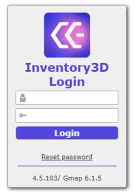
of several building blocks that together provide a customized and tailored solution for a specific need. Take inventory management: Error-prone databases which contain faulty inventory lists can be deleterious, especially in large industry environments. Thus, it is essential that upon inventory changing databases are regularly updated. In this User Guide we introduce the CE Inventory3D. From a desktop, laptop or tablet computer with internet access, the Webapp connects to a database located on a server and enables the user to edit database records, sites and objects, to draw diagrams and to locate the assets on an integrated map. CE Inventory3D integrates data derived from various sources, such as sensors, Google Sheets, maps, and changes in database entries are synchronized with the server database content, keeping the database constantly up to date. This User Guide explains the individual CE Inventory3D functions step by step and in detail 2. Quickstart guide To access the CE Inventory3D web application, type its URL in the address field of a web browser. You can use any web browser, however, we recommend the up-to-date Google Chrome web browser. The URL depends on the installation and initial configuration: 1. Web address, as an example: https://Open dataset Select a site, click on the Record`s Details Tool and the list of objects opens: Sieve Show only selected data of the currently opened table. Click and enter a filter term: Data Editing & Synchronizing Select a respective entry while holding the CTRL key on the keyboard or right mouse click and edit the
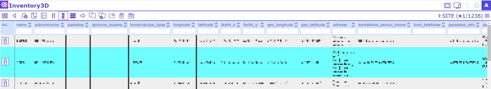
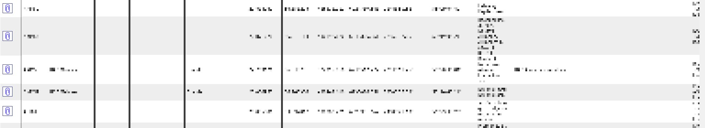
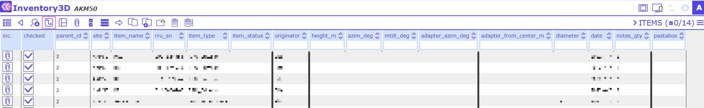
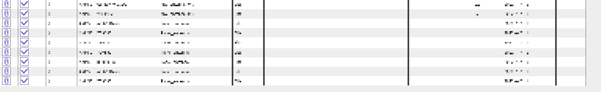
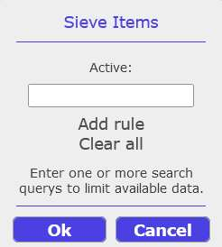
information. After editing changes will be saved automatically. 3. Data Management The Network Data Management view is divided into four sections: Tools for data management. User administration tasks. Table for data editing. View options. 2. View options and 1. Data management User adminstration
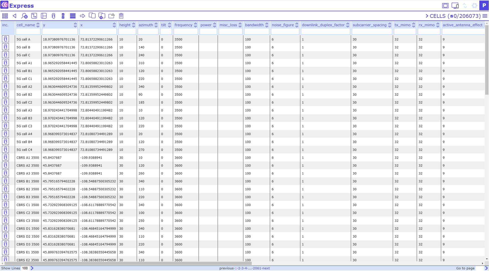
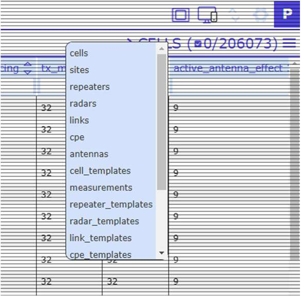
3. Table To navigate through the tables, click on the table name at the top right corner.To select a record, click on a record with the left mouse button. Selected records are colored in blue:
3.1 Data management tools
The Data management tools are found at the top of the screen: 3.1.1 Table view Load data from the previously configured server location and open the Table view. Here, several functions
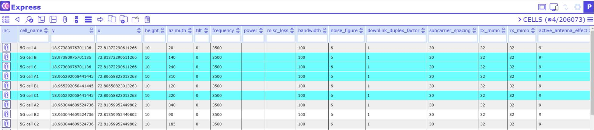
can be performed, eg sorting or filtering data. 3.1.2 Back Go one step back and show previous data. 3.1.3 Search (sieve) Sieve the data in the currently opened table for one or more filter terms. 3.1.4 Multiple table view View and edit all tables from one site simultaneously in one window.
3.1.5 View attachments View the list of attachments associated with a given record. To do so, select a record of choice, then click on the View attachments button and a dialog will open with the respective attachments listed. To view an attachment in a separate browser tab simply click on the attachment of choice 3.1.6 Synchronize changes The button Syncronize changes was removed in version 4. All the changes are commited automatically after user leave the edited field. 3.1.7 Select/unselect all Select/unselect all currently shown database records. 3.1.8 Show selected/Show all Shows all currently selected database records or all the records. 3.1.9 Move record Move an object from one site to another. To do so, select an object and click on the Move Record button. Then select the site you want to move the object to and click the move button again. Note that attachments are not moved. 3.1.10 Copy record Duplicate a database record from the Table view. Select the record to be duplicated. Then click the Copy Record button and the duplicated record appears in pink color in the Table view as a new record. Note that if the selected record to be duplicated has child objects, Copy Record will duplicate the entire record incl.
child objects. Attachments are not duplicated.
3.1.11 Add new record Add a new record to the Table view. Note that the newly added record will appear in orange writing. 3.1.12 CE API Call CE API tool. Note: The administrator has to configure the tool. 3.1.13 Export selected Export selected items. 3.1.14 Delete record Remove a selected record from the current view. Note that removed records will be hidden from the user.
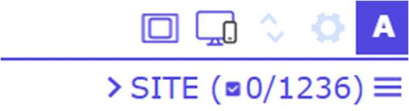
Only administrators can delete a removed record from the database permanently (or restore it). 3.1.15 Remove selected Removes selected objects.3.2 View options and User administration
3.2.1 Map overlay Opens map view Opens table view 3.2.2 Additional tools Opens the menu : See section 5 for details. 3.2.3 Settings Opens the menu for administrator functions: Please view Administration Guide for details. 3.2.4 User name/ Help/ Logout Help - Displays the User Guide for quick help.
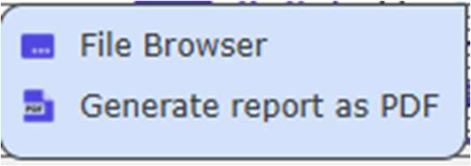
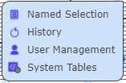
Logout – Logoff the user from CE Inventory3D
3.3 Table
The table comprises all network data. The data can be managed with the Data Management tools (see above). 4. Database organization
4.1 Page setup and navigation
4.1.1 Organization of single and multiple tables The number of records displayed per page can be set on the bottom left corner. Furthermore, you may scroll through the pages using the commands in the bottom middle and bottom right corner. The table name (here: cells), the total quantity of entries (here: 20607), and the quantity of currently selected entries (here:
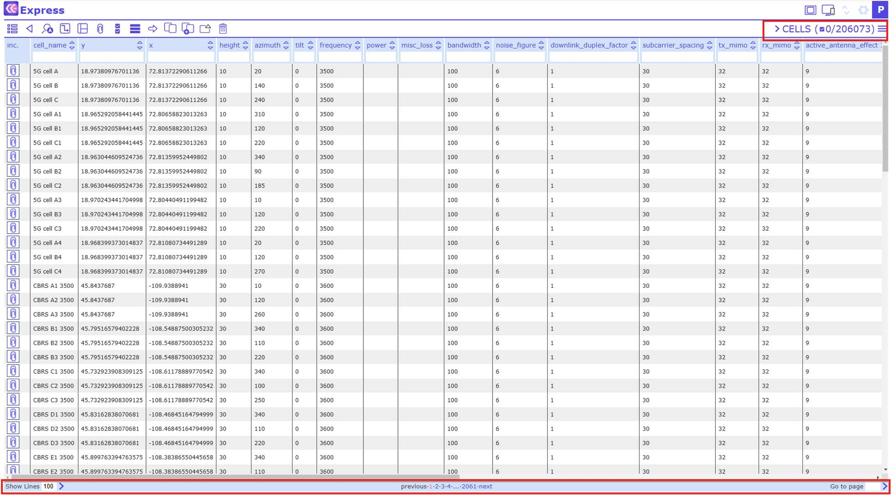
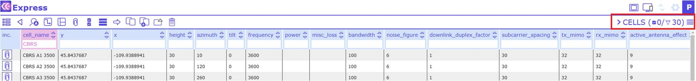
0) are shown on the top right corner. Note that the number of filtered records will be shown, if the user applies a filter:4.1.2 Organization of columns The column order can be adjusted by clicking on in the top right corner. A menu opens in which the position of the columns can be sorted by clicking the arrow symbols. Individual columns are switched visible/invisible by clicking on the eye symbols. The columns can be sorted alphabetically from A>Z or from Z>A using the up and down arrow symbols within the column headers: 4.1.3 Navigation across tables There are 2 ways to change from one table to another. Either click on the table name in the top right (here:
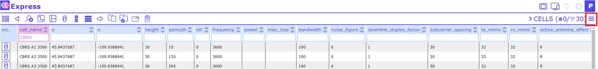
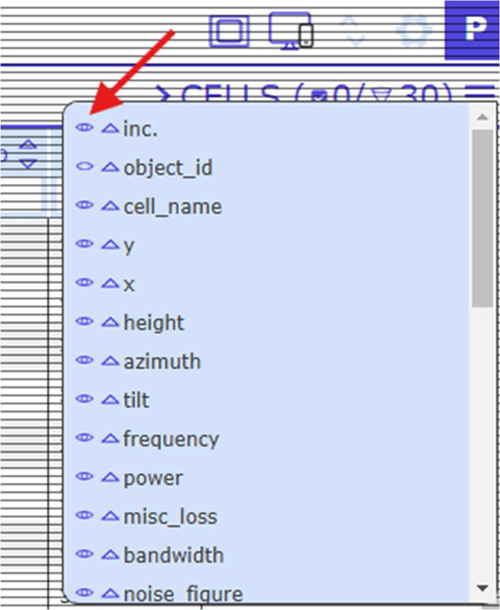
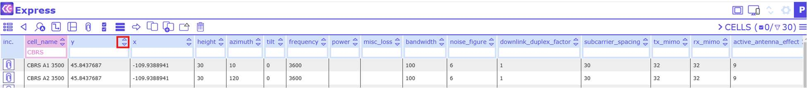
cells) and a menu opens with all available tables.4.2 Filtering, sorting, editing, and linking database records
The database entries can be sorted according to their individual values. To do so, click on the column header and a dropdown menu opens with the following functions: “Set selected”, “Add link”,”Clear this filter”, “Clear all filters”, “Set defaults” and “Set as default sort field”: Alternatively, and more convenient for simple searches, columns can be filtered using the “quick filter” fields
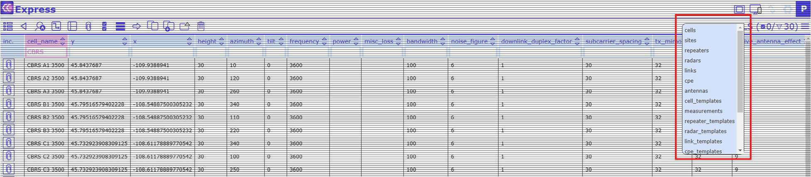
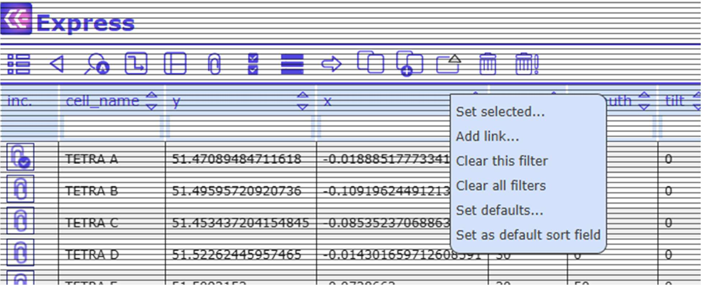
below the column names:Users can use star symbol “” as wildcard. Possible filtering options: - any non-null value ! - null value [text] - anything that contains the [text] value at the beginning. The same as [text] [text] [text] [text]*[text] ![text] - anything but the defined [text] value ”[text]” - for exact match of value Filtering options for numeric values: =n - exact match of n <>n - anything else but n <n - less than n
n - greater than n <=n - less than or equal to n =n - greater than or equal to n The Filter function can be used on several columns simultaneously. The headers of columns with active
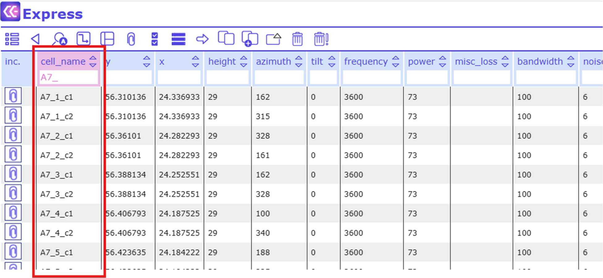
Filter function are marked in pink color:Filters can be cleared by clicking on Clear all filters. 4.2.1 Set selected This feature allows bulk editing of several records at once: Select the respective records, click on the column
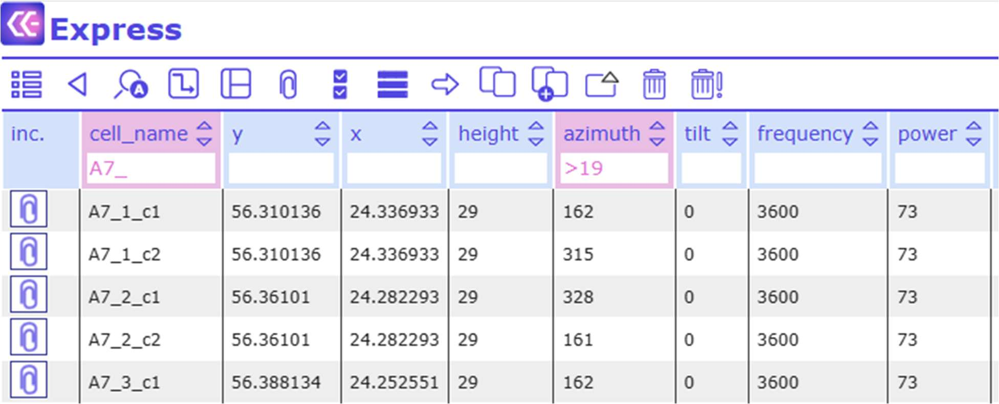
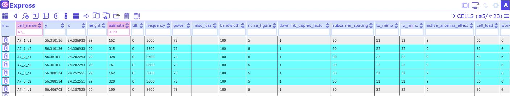
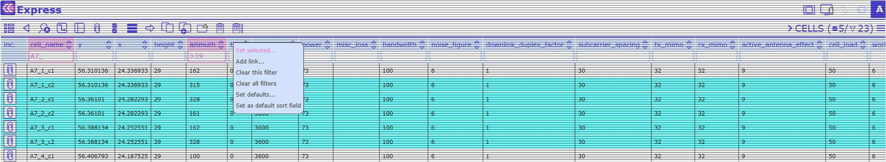
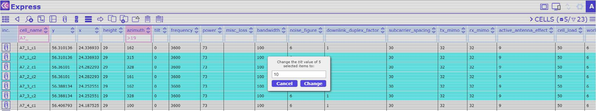
header and choose “Set selected” from the dropdown menu. A dialog opens with a text field. Fill in the term you want the selected database records to be changed to. Then click on “Change”. 1. Select the records 2. Click on the required column header (here:tilt) and choose Set selected 3. Define the new value and click Change4.2.2 Add link Each database record may comprise reference links to other database records. This means that a link can
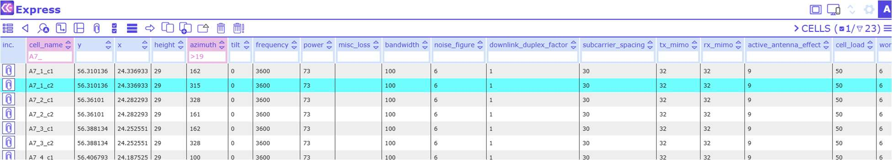
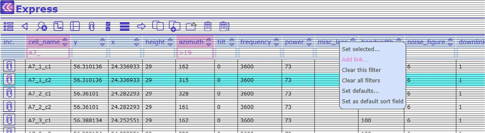
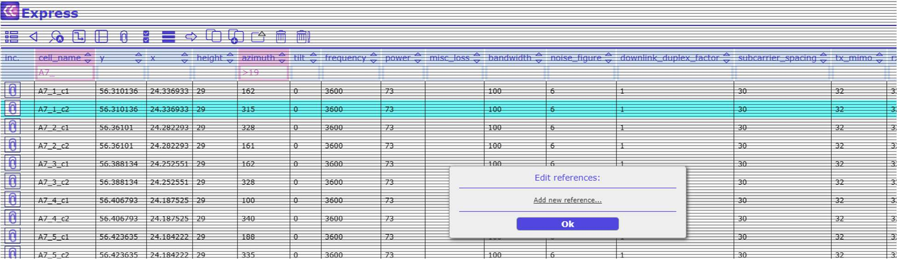
be added to reach another database record. Select the respective record, click on the column header and choose “Add link” from the dropdown menu. In the pop up window, click on Add new reference. A list of component types opens. Select the one you want to link to. Choose the component and confirm the selection. A new link has been created. 1. Select the record 2. Click on the required column header (here:miscloss) and choose Add link 3. Click on Add new reference ... 4. Select the type of component you want to link to (here: calculation tasks)- Choose the repeaters(s) you want to link to and confirm the selection with in the top left corner
- The link has been created
4.3 Adding, viewing, downloading and deleting attachments
Each database entry can be connected with any type of attachment, for example, a picture or a text file.
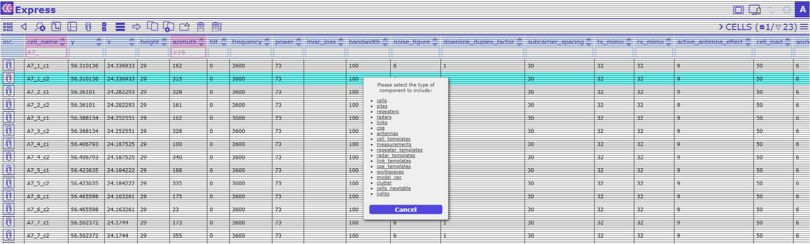
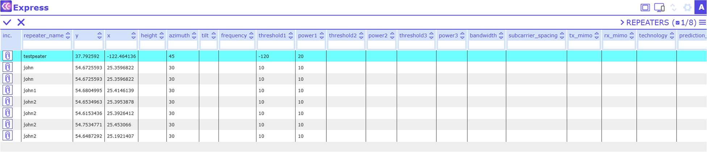
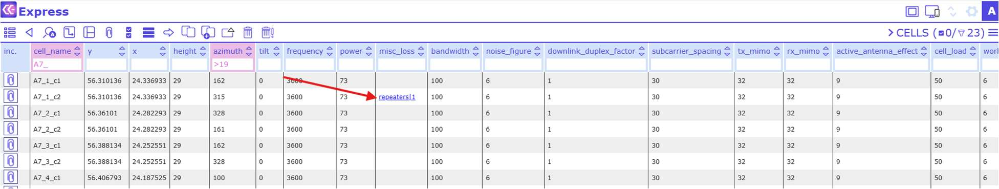
Entries with connected attachments have a blue check symbol next to the paper clip symbol in the column “Inc.”, while entries without attachment have only the paper clip.
Adding attachments To connect a database entry with an attachment, click on the paper clip symbol in the column “Inc.”. A dialog opens that allows you to browse your computer for the attachment of your choice or to take a photo. Viewing, downloading and deleting attachments: To view the list of attachments connected to an entry, select the respective entry and click on in the
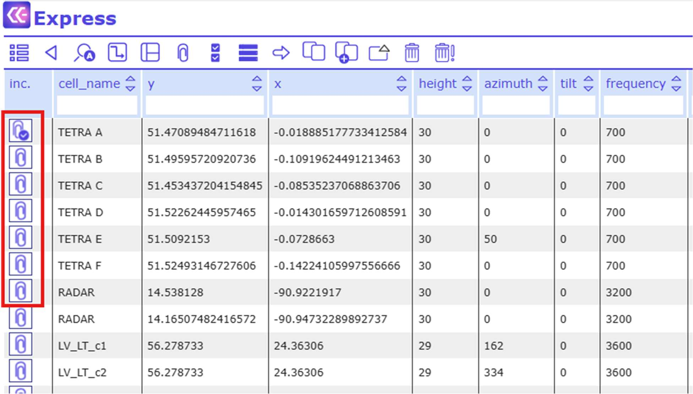
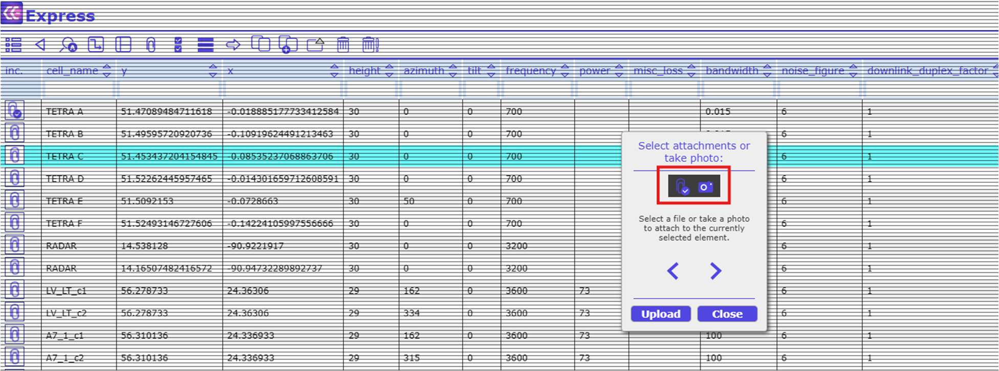
toolbar: In the attachments the listed images are shown as thumbs. Select an attachment from the list and it opens
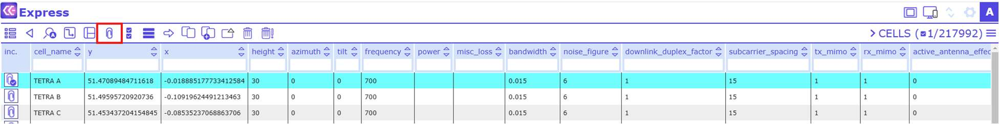
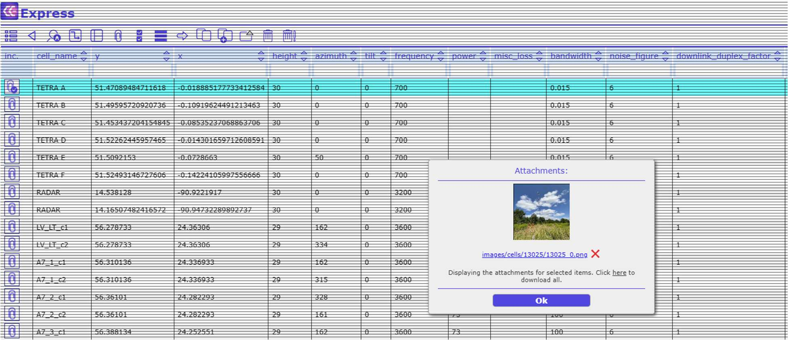
in a separate browser tab. Another way to view an attachment list is to move the pointer over the check symbol in the column “Inc.” and to click the right mouse button. The selected attachments can also be downloaded. To delete an attachment, click on the red cross symbol.
4.4 Search (sieve)
It is possible to display only selected data from an open table. Click on the button in the toolbar.
And a dialog will open: Note that by clicking “Add rule” you may search (sieve) with two or more filter terms that are connected via the operation “OR”, not “AND”. Thus, the result of two filters will show all items that comprise either the first
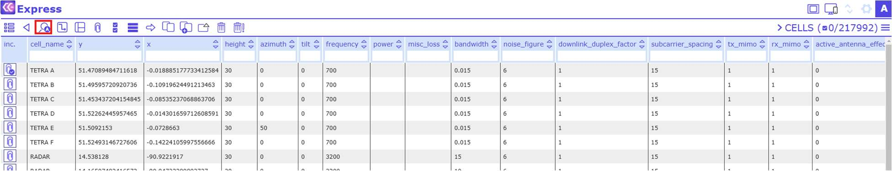
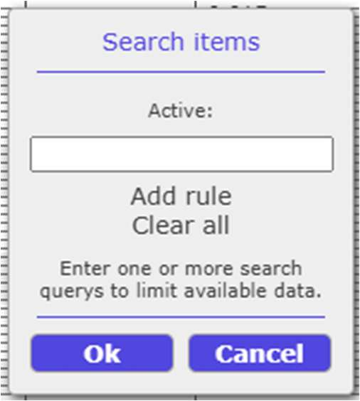
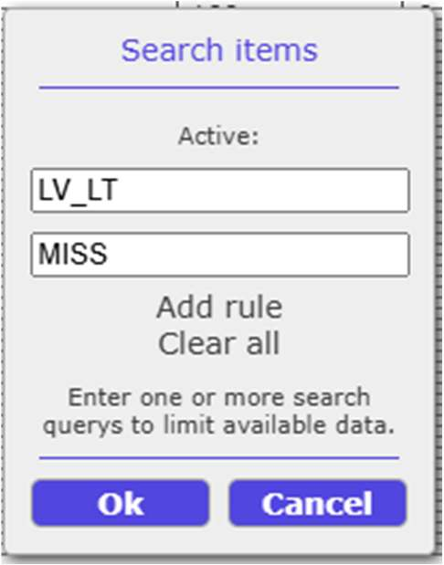
or the second search term in their attributes. For example, do you want to search the table cells for records starting with defined characters? Then the Search tool will help. Click Add rule in order to add another search term, or click Clear all to remove all active searches. To start the sieve process, click OK. Results4.5 CE API
It is possible to call other tools configured by the administrator. For every table a different tool can be configured. To start tool selection, click on the button in the toolbar.
4.6 Import CSV
This tool is integrated into the “CE API” tool. It is possible to import data from .csv files. Note(!): Consult
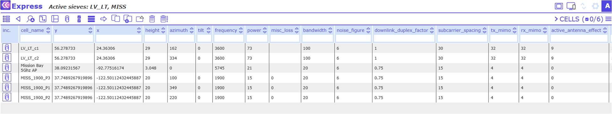
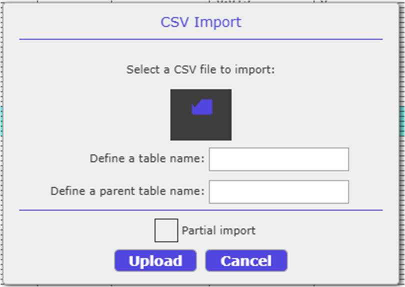
with the administrator before import. “Import CSV” opens a new window: 1. Data can be imported either as a new table (level 0), or added as a child table to a parent table (level 1). When adding a new table, it is required to define the table name. When adding a child table to a parent table, it is required to enter the parent table name. Requirements: 1. The data in the CSV file should be separated by the symbol “;” 2. Avoid space and special characters in the table name 3. Level 0 table – CSV file must comprise a column object_id 4. Level 1 table – CSV file must comprise a column object_id and a column parent_id, with the parent_id value equal to the object_id of the parent table When adding a child table to a parent table, choose the parent table from the dropdown menu:2. 3. Partial Import The Partial Import feature allows to add records to an already existing table. If the box "Partial import” is
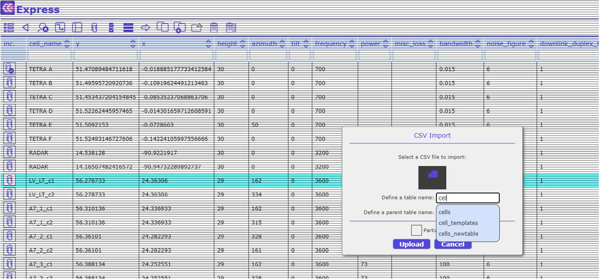
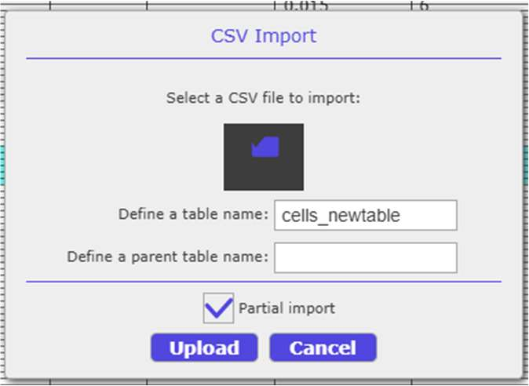
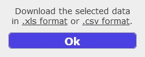
checked, the new records will be added to the defined table: 4. 5. Exploring data5.1 Export selected
Data subsets can be exported as .xls or .csv files. Select the database records of choice, then click Export Selected button: A pop up window opens.
Click on the links to choose between .xls or .csv file formats. Note that hidden columns are not exported.
5.2 PDF report
A PDF report summarizes information associated with one or more objects. For generating a report, first select the objects of choice. Then open the Import Export menu with and choose “Generate report as PDF”: A new dialog appears. Open the PDF report by clicking to the file name: Note that the administrator has to prepare the template for the PDF report. Please inform the administrator
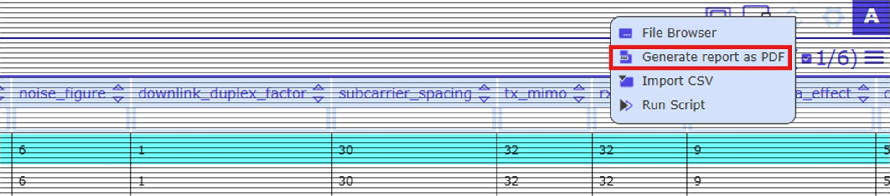
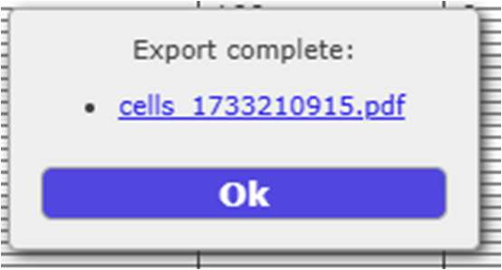
 in case of problems with generating PDF reports.
in case of problems with generating PDF reports.
5.3 File browser
Open the Data Export menu with and choose “File Browser”:
View attached files, download or delete files: Images are shown as thumbs. Note that it is possible to rotate the images.
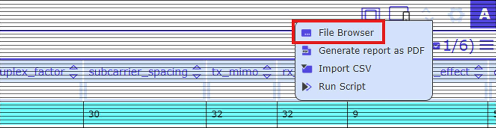
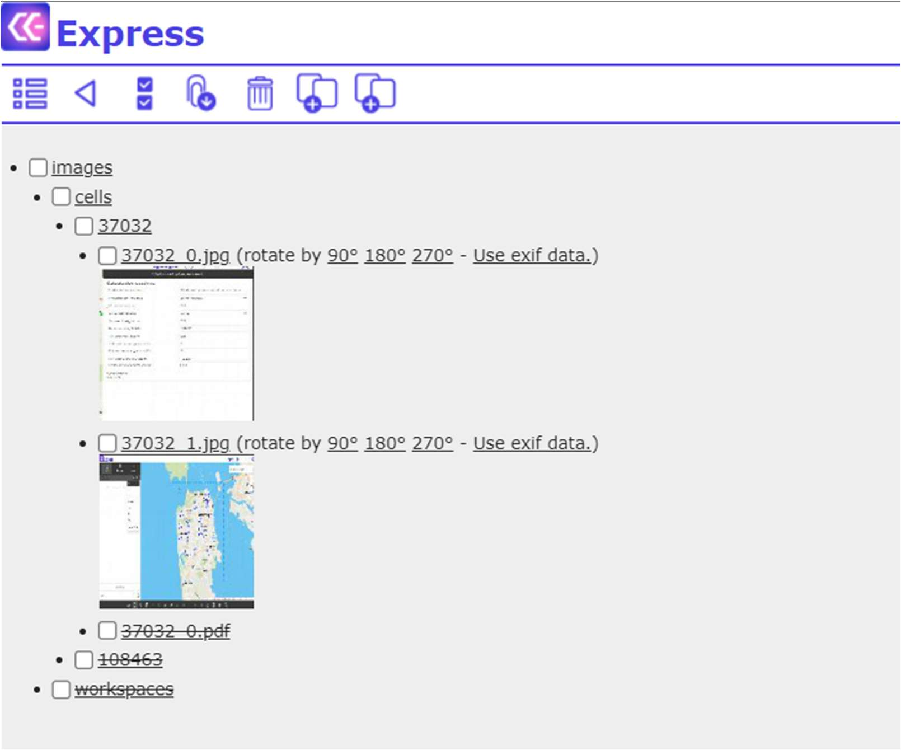
File Browser Toolbar: Open the Data View Panel
Go one step back Select / unselect all files and folders Download selected files Delete selected files Restore selected files When an image is deleted, said image is marked as strikethrough on the File Server:
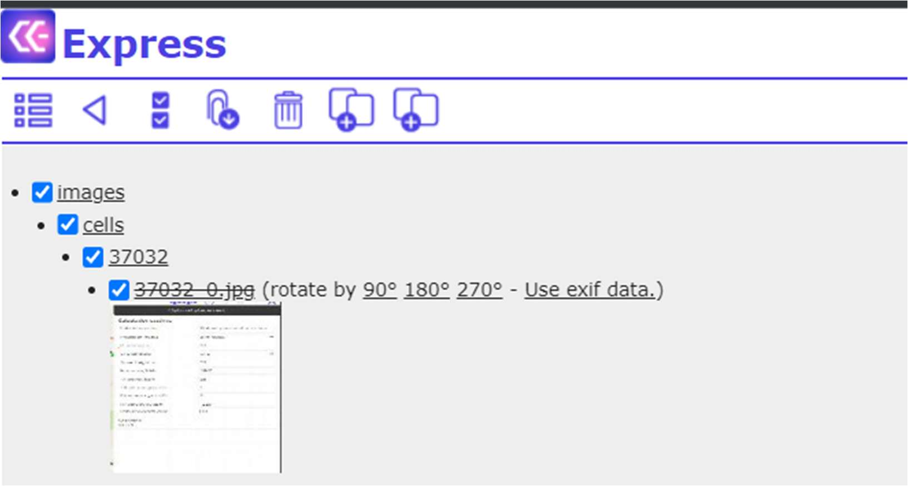
You can restore the image by selecting the strikethrough object and clicking :
5.4 Quick references
Quick references are defined by the administrator and allow users to open a reference object in a separate browser tab. If Quick references are enabled, the respective column is marked with “*”, for example “site”:
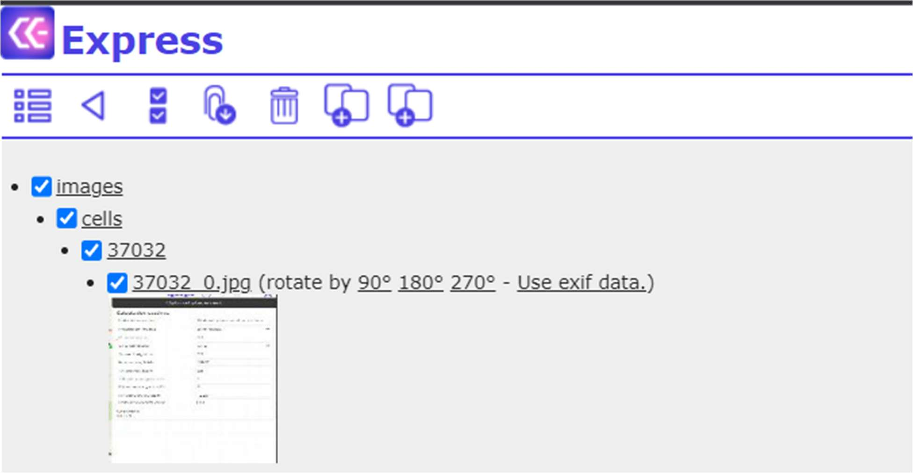
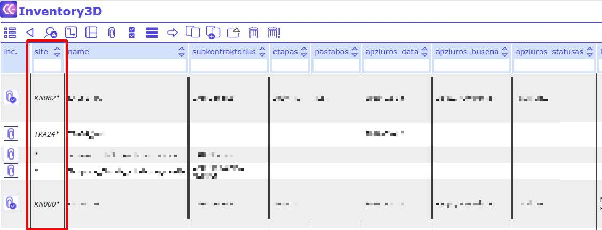
To open a reference link, select it in edit mode (right click on it) and click “here” in the opened dialog.The referenced object is opened in a separate browser tab.
5.5 Default editing and manual editing
If the administrator has defined default values (Administrator Guide: "Set Defaults"), editing column information may include selecting values from a drop-down menu. If the menu does not comprise the desired value, users may manually edit the information or clear the value:
5.6 External Links
It is possible to add links to external webpages to the webapp, for example:
5.7 Displaying Rasters
It is possible to display raster type of data, similar to graphical layers, on the map. Rasters are created by
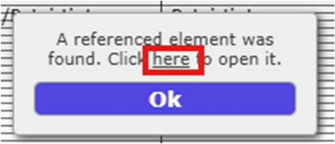
the administrator, but users may also access and configure the table map_rasters:
If the raster is a PNG or JPG file, users can edit the coordinates of the top-left and bottom-right corners of
the picture in the columns West, East, North, and South, and define the opacity. Example raster: Raster legend From the table map_rasters users may access and configure the child table map_rasters_legend,in which the raster legend is defined: The legend color is defined in the field Color. The field must comprise the color code which is formatted as follows: #RRGGBB, where RR is red color value in hexadecimal format, GG is green color value in hexadecimal format, and BB is blue color value in hexadecimal format. For example, code #00FF00 would mean green color. The color value can be acquired from the picture using any software with a color picking tool, e.g. Microsoft Paint or Free Color Picker. The legend labels are defined in the field Label of the table ”map_raster_legend”.
Rasters and Raster legends are shown in the list Layers. 6. MAP functionality Users can work with maps only after prior configuration by the administrator. Select a site and open the
map:
Map viewing options On the right side of the screen, you find the commands Full screen - Google Street View - Zoom in / out Map view - select the preferred map background, for example ESRI streets: Home moves the map view to your current location. Measure Distances Select the Measure Tool , left-click on the starting point, then move the mouse over the map - distance
and azimuth values will be displayed between the starting point and the mouse cursor. Link to database Map and database are functionally connected. Select the info tool . Then click on a site in the map (here: Abava), and a popup window opens:
The popup window comprises links to the site ( ) and to the attachments file browser ( ).
Browse the parameters of the selected site by using the buttons Local Weather Display local weather conditions by clicking on and then on a custom position on the map. A popup window opens with the local weather information. Users may choose from daily, weekly, and monthly data:
Address search Use the field “Search in Google Maps” to search an address and zoom to the defined address. Print map Custom map views can be exported and printed. In the Map toolbar, click the button . A popup window opens with the possibility to enter a document header. Then send the selected
map view to the printer with or :
Vectors, Rasters and Weather layers
The map functionality allows to show or hide vectors (points, lines), rasters or weather layers.
Use and to show or hide objects Further, it is possible to select the child objects shown on the map: Additional map functions are shown after clicking on
“Reload” allows to reload the layer. Edit an object and click “Reload” to show the map with the edited features. “Add Object” allows to add an object to the map. 1. Select the layer on which You would like to add an object, for example "site". Then click "Add Object". 2. Click to the position on the map where you would like to add a new object. If the layer consists of lines, you need to click on the map two times for each end of the line. 3. An object will be created without a label (if label was not described in inv3d_map_settings). 4. Use the info tool to open the Inventory3D page for the new object, edit the attributes and save the information to the database. 5. Click "Reload" and the map will be reloaded with the newly added attributes, for example a label. “Move Object” allows to move an object of point type on the map 1. Select the layer on which You would like to move an object, for example "site". Then click "Select Object".
2. Select the object on the map (it should be marked with a square). 3. Move the pointer to the desired position on the map. Click and the selected object will be moved to the new position. The function will not work if two or more objects are selected. “Set Filter” allows to filter the objects shown on the map. For example, only sites with the address equal to Riga are shown: If the condition like is selected, as in the example below, only objects with the address containing Riga will be displayed. “Clear Filter” allows to clear a preset filter. “Select Object” allows to select one object from the map. To select an object, first click “Select Object” and then on the object on the map.
“Select Circular Area” and “Select Rectangular Area” allow to select multiple objects on the map. 1. Click “Select Circular Area” or “Select Rectangular Area”. 2. Click the mouse button on the map and release. 3. Move the mouse to select several objects and click the mouse button again to release. 4. Selected objects are marked with a yellow square: “Open Selection” Allows to open the CE Inventory3D attribute information of the selected objects. Click “Open Selection” and a new browser tab opens with the grouped data for the selected objects. “Draw Circles & Vectors” Allows to draw circles with a defined radius and lines with a defined azimuth for selected objects. This feature must be configured by the administrator. It draws vectors based on data defined in the tables [table]_circles and [table]_vectors, where table is the name of layer table. “Clear Selection & Vectors” Allows to clear all selections, drawn circles and vectors. Just as the Vectors, Raster (see 4.13) and Weather layers, for example the current weather, are shown or hidden using the buttons and 7. Optional CE Inventory3D features
7.1 Diagram tool
Users can work with diagrams only after prior configuration by the administrator. Once configured the button
appears in the toolbar. Diagrams can be created and modified in two ways: using the graphical diagrams interface, or creating and editing records in the tables “Diagram_items“ and “Diagram_links“ To make a diagram, add a new record in the table “Diagrams“:
then select the record, press the button and create the diagram using the graphical drawing interface (method A) or select the record, press the button and create the diagram records in the tables “Diagram_items“ and “Diagram_links“ (method B) Method AUsing the graphical drawing interface, the diagram can be created by dragging and dropping predefined models from the models templates toolbar and making connections between them. After synchronizing (see section 3.10) all information is saved in the diagrams data tables “Diagram_items“ and
“Diagram_links“. For this reason, diagram modifications can also be performed by making changes directly in those tables. Graphical drawing interface: By drag and drop, select the item types from the left and the connection types from the right. Method BUsing the table interface, the diagram can be created by adding records in the diagrams data tables “Diagram_items" and “Diagram_links“.
The table “Diagram_items" contains the information about the displayed items. For example, in the mobile
networks industry this could be antennas, RRUs, power devices etc. The table “Diagram_items" has the two mandatory fields “Unique_ident“ and “Model”: “Unique_ident“ – item’s unique identification. “Unique_ident“ has to be unique for the same diagram “Model” – the type of graphical element for the item visualization The table “Diagram_links” comprises the information about the connections between the items. The table “Diagram_links“ has the following fields: Item1 – the item a connection comes from. For example, RRU Port1 – a port of Item1 Item2 – the item a connection goes to. For example, antenna Port2 – a port of Item2 Model – type of a connection/cable. For example, RF_cable Following successful table configuration, the diagram can be shown in the graphical editor interface. Simply go to the table “Diagrams“, select the diagram record, and press the button . Example:
For follow up diagram modifications, both the graphical and the table interface can be used. The changes
made by using the graphical editor will be displayed in the diagrams data tables and vice versa. Diagrams toolbar functions: undo / redo action clear paper open as SVG / PNG in a pop-up window open print dialog toggle full-screen mode bring object to front / send object to back
auto-layout graph zoom to fit zoom out / zoom in change grid size enable / disable snaplines show / hide port names save diagram
7.2 Integration with Google Sheets
There is the possibility to integrate one or more tables from Google Sheets into the CE Inventory3D webapp.
First, the Google Sheet should be prepared with CE Inventory3D configuration and Google script. Then an extra button “Inv3D” will appear on the Google Sheets toolbar:
Clicking this button opens a dropdown menu with the commands “Connect” for connecting to the Inventory3D database on the server, “Sync” for synchronizing data from Google Sheets with CE Inventory3D, and “Help”: After connecting to the CE Inventory3D database, a list of tables appears (here: Orders and Warehouse).
The list of tables depends on the configuration in Google sheets: Any changes in the Google Sheets are synchronized with CE Inventory3D by clicking the command Synchronize from the dropdown menu. Note: Google Sheets must have additional configuration to connect to the CE Inventory3D database and to choose which tables can be accessed. A prepared script should be there, too.